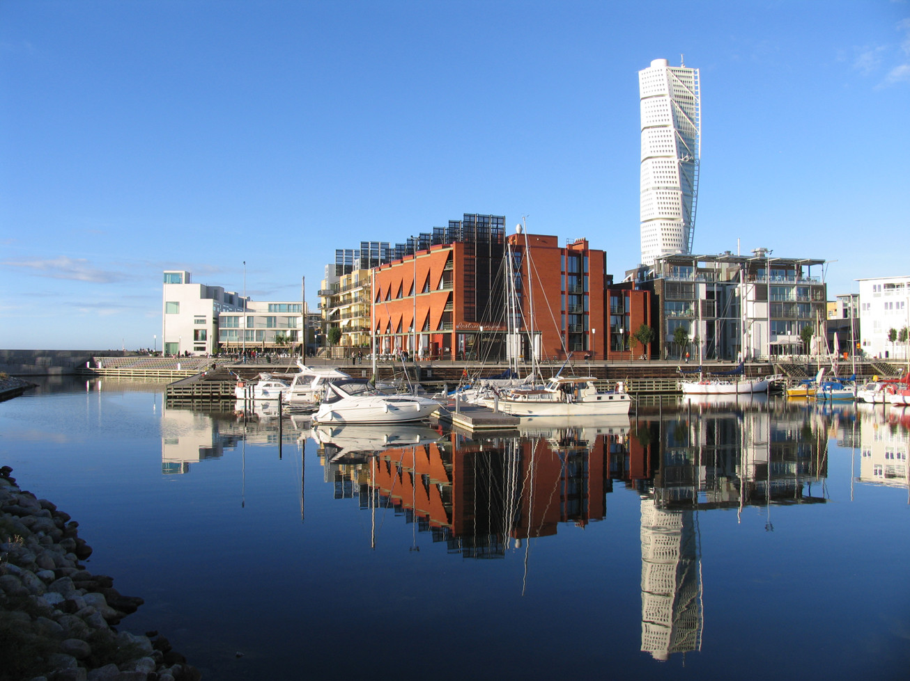

Malmö, Suecia
| Caracterisiticas | |
|---|---|
| Nombre: | Malmö |
| País: | Suecia |
| Población (2010): | 316.588 hab |
Pues la verdad es uno de los primeros viajes que sentido una infinidad de emociones y expriencias dentro de ella, si quereis saber como lo pasé, pues seguir leyendo, pero antes informacion basica de esta maravillosa cuidad.
Información
Malmö es una ciudad ubicada al sur de Suecia con más de 200.000 habitantes (en 2010) que se considera la tercera ciudad más conocida de toda Suecia.Es conocido también por su conexión con Dinamarca
¿Como llegue allí?
Bueno, la verdad todo comenzó cuando quería hablar con mis padres sobre si hubiera un posiblidad de viaje y luego mis padres llamaron a uno de mi familia de otra parte para que yo pudiese viajar a otro pais y seguir con mis estudios y encontrar un proposito en mi vida
Después de unos meses desde que les mencioné el asunto, mi tía se puso en contacto conmigo para que yo pudiese viajar y acepte su propuesta porque ahí creo que pudiera más o menos conocer más gente y conocer nuevas culturas yo las veces
Clima

Malmö presenta un clima templado oceánico (Köppen: Cfb) propio del sur de Suecia. A pesar de estar en el norte de Europa, tiene un clima más suave gracias a la corriente del Golfo y a su cercanía con el estrecho de Øresund. De igual modo, las precipitaciones son relativamente estables a lo largo del año, con una media anual de 602 mm. Hay una media anual de 1895 horas de sol: más de 17 horas en verano y menos de 7 horas en invierno.19
La localidad más poblada de Escania cuenta con inviernos fríos con precipitaciones, alta posibilidad de nevadas (25 %) y temperaturas que en ocasiones pueden quedar bajo cero (-3 °C), mientras que los veranos son más cálidos que en otras regiones de Suecia, con temperaturas medias de 23 °C y máximas de 32 °C en julio, aún con posibilidad alta de precipitaciones.